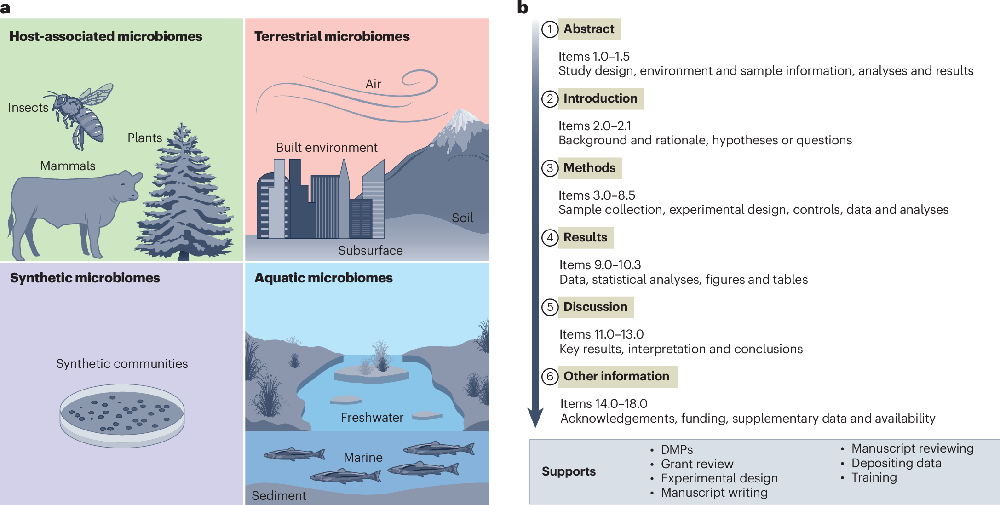
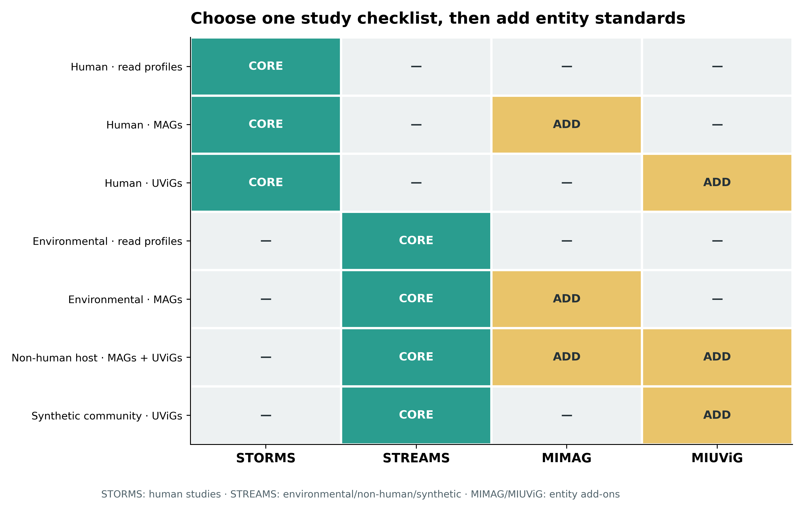
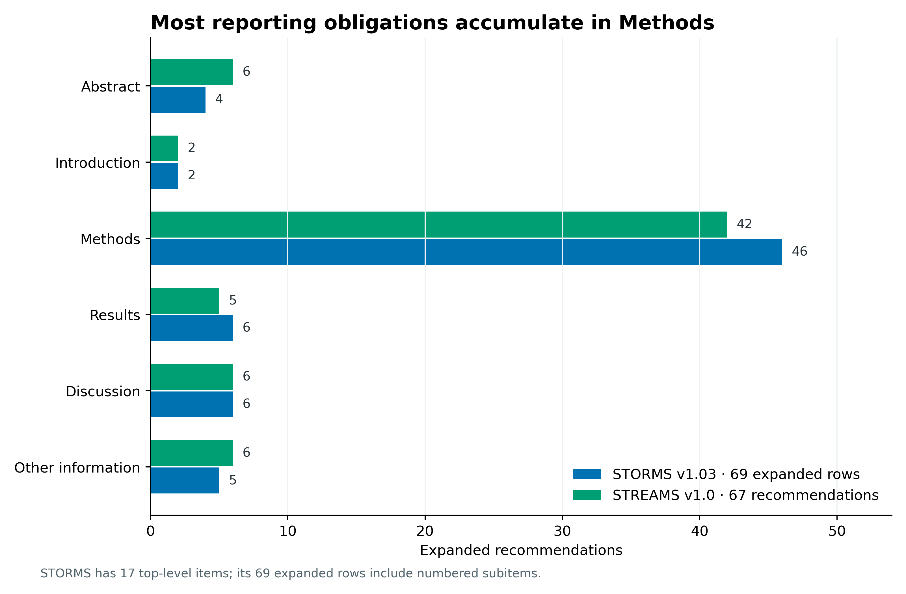
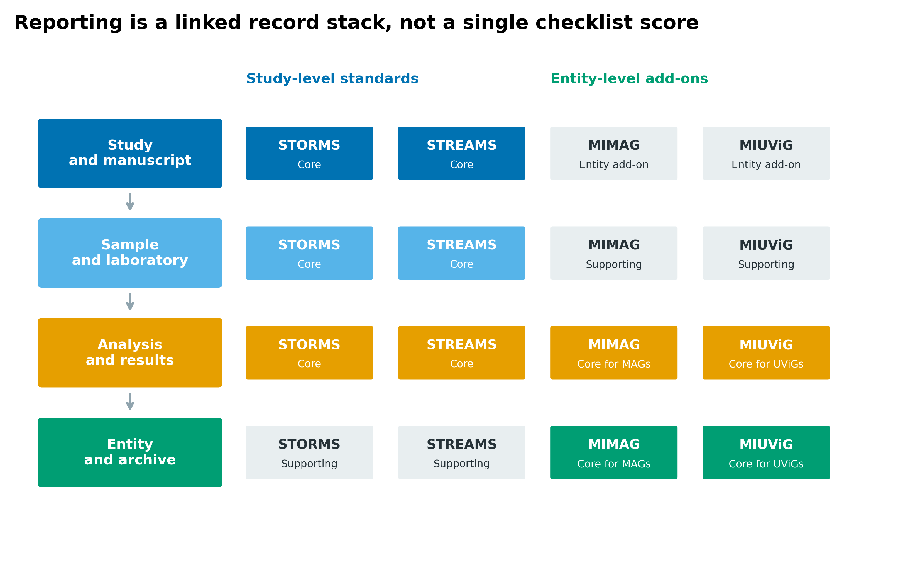
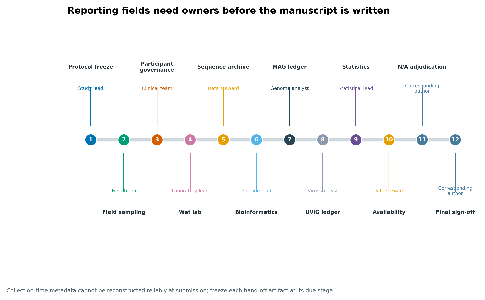
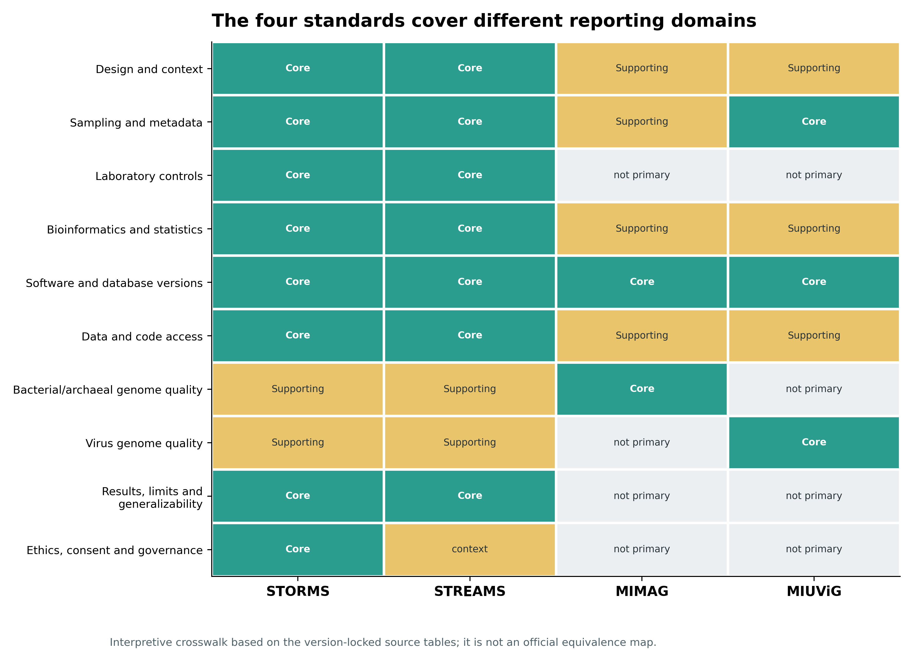
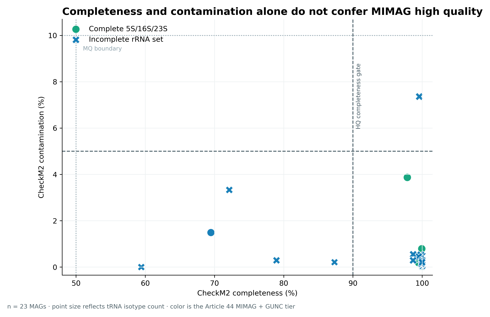
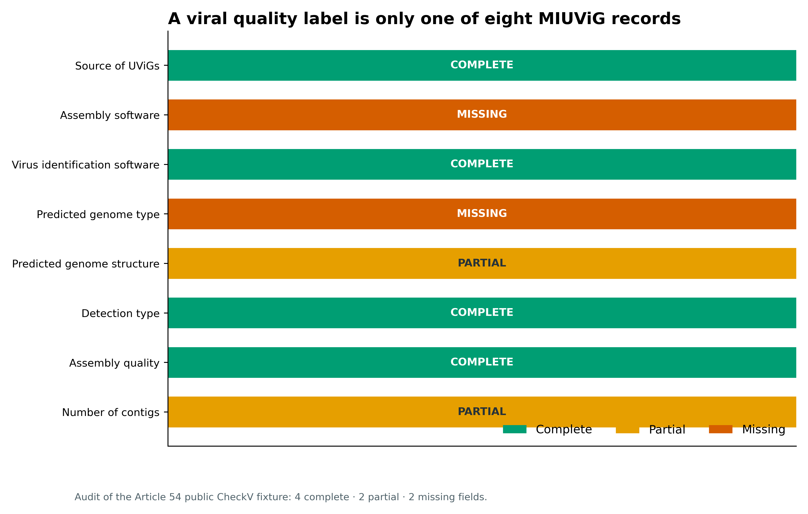
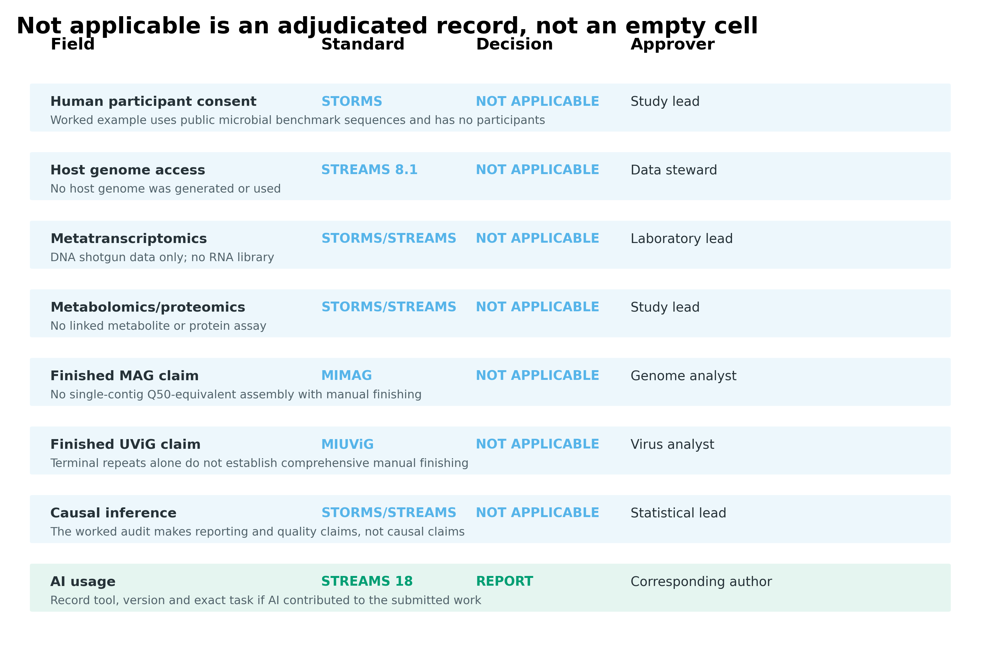
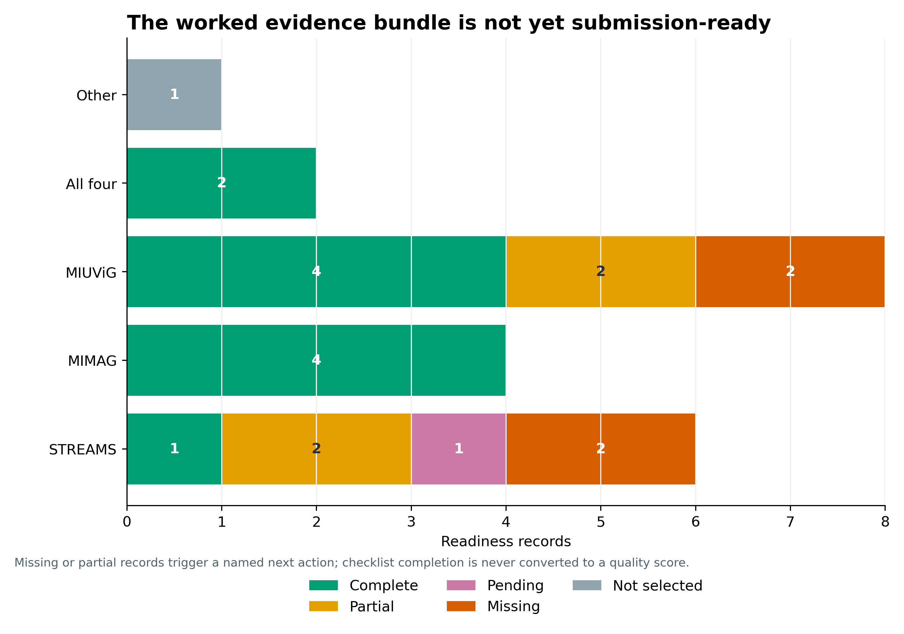

| Standard | Section | Item | Topic | Recommendation |
|---|---|---|---|---|
| STORMS | Abstract | 1.0 | Structured or Unstructured Abstract | Abstract should include information on background, methods, results, and conclusions in structured or unstructured format. |
| STORMS | Abstract | 1.1 | Study Design | State study design in abstract. |
| STORMS | Abstract | 1.2 | Sequencing methods | State the strategy used for metagenomic classification. |
| STORMS | Abstract | 1.3 | Specimens | Describe body site(s) studied. |
| STORMS | Introduction | 2.0 | Background and Rationale | Summarize the underlying background, scientific evidence, or theory driving the current hypothesis as well as the study objectives. |
| STORMS | Introduction | 2.1 | Hypotheses | State the pre-specified hypothesis. If the study is exploratory, state any pre-specified study objectives. |
| STORMS | Methods | 3.0 | Study Design | Describe the study design. |
| STORMS | Methods | 3.1 | Participants | State what the population of interest is, and the method by which participants are sampled from that population. Include relevant information on physiological state of the subjects or stage in the life history of disease under study when participants were sampled. |
报告标准：STORMS / STREAMS / MIMAG / MIUViG
先给结论：人体微生物组研究先用 STORMS，环境、非人宿主或合成微生物组研究先用 STREAMS；报告细菌或古菌 SAG/MAG 时再加 MIMAG，报告未培养病毒基因组（uncultivated virus genome, UViG）时再加 MIUViG。前两者约束研究设计、方法、结果与开放性，后两者约束逐基因组实体记录。它们互补，不能互相替代；清单也不是研究质量评分。
提示清单填满，为什么仍可能无法评价研究
研究级清单与实体级标准需要组合使用；不适用要解释原因，完成比例不能代替关键条目。
报告研究与报告基因组，为什么需要不同标准？
STREAMS 的 Figure 1a 先划定适用对象：非人宿主相关、陆地、水体和合成微生物组；Figure 1b 再把 67 条建议映射到 Abstract、Introduction、Methods、Results、Discussion 和 Other information 六个论文部分 (Kelliher 等 2025年)。这张图最重要的信号不是“有一张清单”，而是报告从研究问题开始，贯穿样本、实验、分析、结果解释与数据可用性。

STORMS 面向人体微生物组，正式论文概括为 17 个一级条目 (Mirzayi 等 2021年)；v1.03 工作簿把子条目展开后共有 69 行 (STORMS Consortium 2021年)。STREAMS v1.0 工作簿的正式 STREAMS_final 页签则有 67 行 (STREAMS Consortium 2025年)。两者都覆盖六个论文部分，但适用人群、伦理语境、环境元数据与样本治理不同。
重要先按研究对象选主清单
人粪便、口腔、皮肤或其他人体样本，即使分析的是病毒，也以 STORMS 为主清单；土壤、水体、植物、动物、建筑环境或合成群落以 STREAMS 为主清单。是否产生 MAG 或 UViG 决定是否叠加 MIMAG/MIUViG，不改变主清单。
清单填满，为什么仍可能无法评价研究？
“报告了某项信息”与“这项做法足够可靠”不同。一个研究可以完整说明没有阴性对照，却仍留下污染解释的不确定性；也可以填入所有基因组质量字段，却没有达到所声称的质量类别。清单的作用是让这些判断成为可能，不是用完成率抵消关键证据缺口。
不适用与未完成也应区分：前者需要与研究对象一致的理由，后者应说明缺失及其影响。研究级条目定位到方法、结果或数据入口，实体级条目则对应具体基因组记录。只有读者能够找到并核对这些证据，报告完整性才真正有用。
从官方清单读起，保留来源行与版本
不是四选一，而是“一张主清单 + 实体附加标准”
STORMS 和 STREAMS 回答“这项研究如何设计、实施、分析和公开”；MIMAG 与 MIUViG 回答“这个基因组实体至少要附带哪些信息”。因此标准集合可写成：
\[ S = S_{study}(context) \cup S_{entity}(reported\ genomes), \]
其中人体语境的 \(S_{study}\) 为 STORMS，环境/非人宿主/合成群落语境为 STREAMS；当结果包含 MAG 或 UViG 时，\(S_{entity}\) 分别加入 MIMAG 或 MIUViG。

这条规则能避免两个高频错误：只交一张 MIMAG 表却没有交代采样、阴性对照、统计模型与数据访问；或填完 STORMS/STREAMS，却没有逐 MAG/UViG 报告质量与来源。
解析后的长表保留 WorkbookSheet、SourceRow、ItemNumber、推荐正文和附加指导。STORMS 的 4.10 在 Excel 内部数值仍是 4.1，但单元格格式为两位小数；解析器同时读取值与格式，避免把 4.10 Replication 错并到 4.1 Specimen collection。
items <- utils::read.delim(
"data/small/76-reporting-standards-frozen/checklist-items.tsv",
check.names = FALSE, quote = "", comment.char = "",
stringsAsFactors = FALSE
)
table(items$Standard)
# STORMS STREAMS
# 69 67
with(items, table(Standard, ManuscriptSection))每条记录后续增加四列即可进入项目台账：
checklist <- transform(
items,
Status = "Not assessed", # Complete / Partial / Missing / N/A
Owner = NA_character_,
EvidenceLocation = NA_character_,
NotApplicableReason = NA_character_
)用研究情境生成标准集合
Methods 是清单最密集的部分
STORMS v1.03 的 69 个展开条目中有 46 个落在 Methods，STREAMS v1.0 的 67 条中有 42 条落在 Methods。等到写稿末期再补清单，最容易缺失的正是无法从结果文件倒推的信息：采样时间、保存温度、试剂 lot、随机化、阴性对照、批次与非默认参数。

因此清单应在 protocol freeze 时初始化，每个条目至少有 status、owner、evidence_location、due_stage 与 not_applicable_reason，而不是投稿前由一人凭记忆打勾。
[1] "STREAMS" "MIMAG" "MIUViG" 这个函数不根据 sequencing platform 选择 STORMS 或 STREAMS，因为决定因素是研究对象与治理语境；shotgun、amplicon、metatranscriptome 只改变哪些条目适用和 Methods 如何填写。
STORMS 与 STREAMS 不能按“哪个更新”互换
STREAMS 发表时间更晚，但它不是 STORMS 的通用替代版。STORMS 针对人体研究的参与者、临床变量、伦理、知情同意和受保护数据；STREAMS 强化环境/宿主时空语境、样本保存、host data、FAIR/CARE、环境治理和样本可用性。选择错误会让真正关键的上下文字段变成“看似不适用”。
注意坑 1：把 STORMS、STREAMS、MIMAG、MIUViG 当成四选一
研究级清单和实体级标准解决不同问题。正确组合是 STORMS 或 STREAMS 为主，按结果实体叠加 MIMAG/MIUViG。
把清单分配给真正拥有信息的人
把报告拆成四层相互链接的记录
有效报告至少有四层：
- study/manuscript：研究问题、设计、伦理、偏倚、结果与限制；
- sample/laboratory：样本 ID、时间地点、保存、提取、试剂批次和对照；
- analysis/results：软件、数据库、参数、统计单位、缺失值和敏感性分析；
- entity/archive：每个 MAG/UViG 的质量字段、序列 ID、文件哈希与 accession。

这些层必须通过稳定 ID 相连：subject_id → sample_id → library_id → run_accession → MAG_id/UViG_id。只有“样本表”和“基因组表”而没有 ID crosswalk，读者仍无法判断某个实体来自哪个样本、哪次处理和哪个分析版本。
采样日期应由 field team 在采样时登记，kit/lot 和 controls 由 laboratory lead 冻结，软件/数据库/参数由 pipeline lead 导出，统计单位和敏感性分析由 statistical lead 签字。让 corresponding author 在投稿前追忆全部字段，会把事实记录变成不可靠的叙述。

| Order | Milestone | Owner | Required artifact | Due |
|---|---|---|---|---|
| 1 | Protocol freeze | Study lead | Design, hypotheses, inclusion and sampling frame | Before collection |
| 2 | Field sampling | Field team | Site, time, environment/host and preservation ledger | At collection |
| 3 | Participant governance | Clinical team | Consent, ethics, protected-data access path | Before recruitment |
| 4 | Wet lab | Laboratory lead | Kits/lots, controls, extraction, library and batch map | At library freeze |
| 5 | Sequence archive | Data steward | BioProject/BioSample/SRA accessions and ID crosswalk | Before submission |
| 6 | Bioinformatics | Pipeline lead | Commands, versions, databases, parameters and checksums | At run freeze |
| 7 | MAG ledger | Genome analyst | Per-MAG quality and feature record | Before MAG claims |
| 8 | UViG ledger | Virus analyst | Per-UViG source, detection, structure and quality | Before UViG claims |
| 9 | Statistics | Statistical lead | Units, models, missingness, multiplicity and sensitivity | Before figure freeze |
| 10 | Availability | Data steward | Processed data, code DOI, licenses and restrictions | Before submission |
| 11 | N/A adjudication | Corresponding author | Reason and approver for every not-applicable item | At checklist freeze |
| 12 | Final sign-off | Corresponding author | Versioned checklist plus manuscript page/line links | At submission |
交叉表是导航，不是官方等价关系
下图按十个 reporting domains 标出四套标准的核心或支持作用。它是基于版本锁定源表构建的解释性 crosswalk，不是四个标准组织发布的逐条映射。投稿时仍须提交期刊要求的原始 checklist，并保留 item-level page/line location。

注意坑 3：所有空白都填 N/A
N/A 必须有适用性理由和批准人。暂时找不到、尚未生成或不愿公开分别是 Missing、Pending 或 Restricted，不是 Not applicable。
对 23 个真实 MAG 逐实体重算 MIMAG 门槛
MIMAG 的质量等级是多条件门，不是完整度单指标
MIMAG 的压缩标准 (Bowers 等 2017年) 要求：
| Quality level | Completion | Contamination | Additional assembly requirement |
|---|---|---|---|
| Finished | complete | — | single contiguous sequence, no gap/ambiguity, Q50-equivalent consensus |
| High-quality draft | >90% | <5% | 23S/16S/5S rRNA genes and at least 18 tRNAs |
| Medium-quality draft | ≥50% | <10% | assembly statistics reported |
| Low-quality draft | <50% | <10% | assembly statistics reported |
“CheckM2 completeness >90% 且 contamination <5%”只能让一个 MAG 成为 high-quality 候选。rRNA/tRNA 条件没过，不能升为 high-quality。GUNC 的谱系一致性不是 MIMAG 原表中的等级条件，但能补充完整度/污染估计对嵌合 bin 不敏感的缺口 (Orakov 等 2021年)。
第 44 篇冻结了 23 个 MAG 的 CheckM2、GUNC、完整 5S/16S/23S 和 tRNA isotype 记录。下面的重算先执行 MIMAG core gate，再与加入 GUNC pass 的扩展 gate 对照 (Chklovski 等 2023年; Orakov 等 2021年)。
Tier MAGs
1 High quality 4
2 Medium quality 19
3 Low/failed 0
23 个 MAG 中有 17 个先达到 >90/<5 候选象限，但最终只有 4 个同时满足完整 5S/16S/23S 与至少 18 个 tRNA isotypes；19 个归为 medium quality。所有 23 个在此数据集都通过 GUNC，所以 MIMAG core tier 与 Article 44 扩展 tier 一致。若 GUNC 失败，应保留 core tier 与 chimera warning 两列，而不是静默覆盖原始字段。
注意坑 4：只给每个 MAG 一对 completeness/contamination
MIMAG high-quality 还要完整 5S/16S/23S 与至少 18 个 tRNA；当前实践还应补充嵌合审计、数据库版本、序列哈希和 accession。
用八个 mandatory fields 检查 UViG 结果包
MIUViG 的质量标签只是八个必填字段之一
MIUViG 为 UViG 要求八类 mandatory metadata：来源、组装软件、病毒识别软件、预测基因组类型、预测结构、检测类型、组装质量和 contig 数 (Roux 等 2019年)。其 high-quality draft 指完整或达到预期基因组长度的 90%；finished 还要求单一无 gap/ambiguity 的连续序列和全面人工审阅。DTR/ITR 或软件给出的 complete 预测不能自动等同于 finished。
第 54 篇的 46 条 CheckV 公共 fixture 序列有 geNomad、VirSorter2、CheckV、vOTU 和 terminal-repeat 结果。按 MIUViG Table 1 审计后，八个 mandatory fields 中 4 个 complete、2 个 partial、2 个 missing。
| Mandatory metadata | Status | Evidence or explicit gap |
|---|---|---|
| Source of UViGs | Complete | input-lineage.tsv identifies 46 CheckV regression-fixture sequences |
| Assembly software | Missing | Upstream assembly program and parameters are not carried by the public fixture |
| Virus identification software | Complete | geNomad 1.12.0 and VirSorter2 2.2.4 versions, commits, parameters and logs |
| Predicted genome type | Missing | DNA/RNA and strandedness are not recorded per UViG |
| Predicted genome structure | Partial | terminal-repeat evidence exists, but structure is not resolved for every UViG |
| Detection type | Complete | computational detection is recorded in the two-caller evidence matrix |
| Assembly quality | Complete | CheckV 1.1.1 quality category is recorded for all 46 sequences |
| Number of contigs | Partial | each record is one sequence, but segmented-genome membership is unresolved |

关键点是：CheckV 为全部 46 条序列给出 quality category，并不代表 MIUViG 已完成。fixture 没有携带上游 assembly software/parameters，也没有为每条 UViG 记录 DNA/RNA 与 strandedness；这些缺口必须显示为 missing，而不是从序列文件名猜测。
旧阈值要保留，当前风险要追加
忠实报告 MIMAG 等级时应保留其原始定义；当前分析再追加：
- CheckM2 版本、数据库 release 和 per-genome 结果；
- GUNC 或等价的谱系一致性/嵌合审计；
- rRNA/tRNA 检测工具与参数；
- assembly graph、coverage 与 contamination 证据；
- GTDB-Tk 数据库 release 和分类结果；
- 每个 MAG FASTA 的 SHA-256 与 sequence accession。
追加字段不能偷偷改写 MIMAG 的原始含义。最清楚的设计是 MIMAGCoreTier、ChimeraStatus、ExtendedAcceptance 三列并存。
注意坑 5：把 CheckV complete 或 DTR 写成 MIUViG finished
finished 需要全面人工审阅与编辑。quality category 之外，八类 mandatory metadata 也要逐 UViG 记录。
N/A 必须有理由和批准人
“不适用”是一个判断，不是空白。每条 N/A 至少记录标准条目、适用性理由、批准人和日期；若只是暂时没有信息，状态应是 Missing 或 Pending，不能用 N/A 隐藏。

Field StandardItem Disposition Approver
1 Human participant consent STORMS Not applicable Study lead
2 Host genome access STREAMS 8.1 Not applicable Data steward
3 Metatranscriptomics STORMS/STREAMS Not applicable Laboratory lead
4 Metabolomics/proteomics STORMS/STREAMS Not applicable Study lead
5 Finished MAG claim MIMAG Not applicable Genome analyst
6 Finished UViG claim MIUViG Not applicable Virus analyst
7 Causal inference STORMS/STREAMS Not applicable Statistical lead
8 AI usage STREAMS 18 Report Corresponding author病毒“完整”预测不能跳到 finished
MIUViG finished 需要全面人工审阅和编辑；terminal repeat、CheckV complete 或单 contig 都只是证据的一部分。应同时报告来源、detection type、结构预测、contig/segment 关系、质量方法和 uncertainty。无法判定 strandedness 或 segmented genome membership 时，写 Unknown 并解释，而不是用最常见的 dsDNA 假设补齐。
设置投稿就绪门，不计算完成率
把 status 汇总成计数，是为了暴露阻断项，不是为了产生“87% 合规”之类的分数。样本元数据、assembly provenance 或 accession 缺失时，即使其余条目都填完，也可能无法复现或提交。

ReadinessField Standard Status
3 Sample metadata STREAMS Missing
12 Assembly software MIUViG Missing
14 Predicted genome type MIUViG Missing
20 Checklist page/line links STORMS/STREAMS Missing
21 AI contribution statement STREAMS 18 Pending
EvidenceOrNextAction
3 Tutorial fixture lacks a manuscript-level sampling table
12 Upstream assembly program and parameters are not carried by the public fixture
14 DNA/RNA and strandedness are not recorded per UViG
20 Add after manuscript pagination is stable
21 Apply current journal policy at submission这份 worked audit 有 11 项 complete、4 项 partial、4 项 missing、1 项 pending 和 1 项 not selected。阻断项包括样本元数据、assembly software、predicted genome type、page/line links 与 AI contribution statement；修复动作已逐行记录。
注意坑 2：用完成率证明研究质量
清单提高透明度，但“100% 填写”不保证设计无偏、统计有效或结论正确。一个关键 Missing 字段也可能阻断复现，不能被大量容易填写的 Complete 稀释。
注意坑 6：混读工作簿里的开发页签
STREAMS v1.0 使用正式 STREAMS_final。文件中出现的 draft 或 v2 开发页签不能和已发表版本拼接；页签名、版本、DOI 与哈希应同时锁定。
保存清单、图件与 QA
代码
python3 scripts/freeze_article76_standards.py \
--project-root . \
--work-dir results/76-reporting-standards \
--output-dir data/small/76-reporting-standards-frozen
quarto render chapters/76-reporting-standards.qmd
python3 scripts/validate_article76_standards.py \
--project-root . \
--frozen-dir data/small/76-reporting-standards-frozen \
--chapter chapters/76-reporting-standards.qmd \
--rendered-html _site/chapters/76-reporting-standards.html \
--qa-dir qa/article76冻结包保存 136 条清单记录、四套标准定义、23 个 MAG 和 8 个 UViG 字段的审计、责任矩阵、N/A ledger、readiness gate、源码、环境与逐文件 SHA-256。
清单版本必须和投稿日期绑定
STORMS 使用 v1.03，STREAMS 使用 v1.0；工作簿、DOI、下载日期与 SHA-256 都写入 source manifest。若投稿前清单更新，应新建一次 migration audit：列出新增、删除、改名条目及处理结果，不覆盖原台账。STREAMS 的 AI usage 条目还要同时核对投稿当日的期刊政策，因为相关要求会变化。
注意坑 7：投稿前才向实验人员追要元数据
采样时间、温度、kit lot、对照和 batch 很可能无法可靠追溯。protocol、collection、library、run、figure 和 submission 各阶段都要有 hand-off artifact。
把报告条目落实到具体证据
下面模板对应“环境/非人宿主 shotgun + MAG + UViG”的组合；人体研究把 STREAMS 段替换为 STORMS，并加入伦理、参与者与受控访问细节。
Reporting standards. Reporting was audited against STREAMS v1.0 (Zenodo DOI: 10.5281/zenodo.15014818), using the published
STREAMS_finalworksheet containing 67 recommendations across six manuscript sections. For studies involving human participants, the corresponding study-level checklist is STORMS v1.03 (Zenodo DOI: 10.5281/zenodo.5714305; Mirzayi et al., 2021). Each checklist record contained an item identifier, status, responsible owner, manuscript or repository location, and a reason and approver when marked not applicable. Checklist completion was used as a reporting gate and not as a score of study quality.MAG records. Bacterial and archaeal MAGs were reported according to MIMAG (DOI: 10.1038/nbt.3893). Completeness and contamination were estimated with CheckM2 v1.1.0 using database v3 (Zenodo DOI: 10.5281/zenodo.14897628). High-quality draft status required >90% completeness, <5% contamination, complete 5S, 16S and 23S rRNA genes, and at least 18 tRNA isotypes. Lineage consistency was additionally assessed with GUNC v1.1.0 and the ProGenomes2.1 database; this extension was reported separately from the MIMAG core tier.
UViG records. Uncultivated virus genomes were reported according to MIUViG (DOI: 10.1038/nbt.4306). Per-UViG records included dataset source, assembly software and parameters, virus-identification software and thresholds, predicted genome type and structure, detection type, assembly-quality category, and number of contigs. Viral sequence quality was assessed with CheckV v1.1.1 and database v1.5 (release date 2023-01-10). Terminal repeats or predicted completeness alone were not interpreted as evidence of a finished genome.
Provenance and availability. Checklist workbooks, database releases, software versions, non-default parameters, sequence and table identifiers, and SHA-256 checksums were frozen before submission. Missing, partial, pending, restricted and not-applicable states were retained as distinct values. Raw data, processed profiles, genome FASTA files, item-level reporting ledgers, source code and environment specifications were linked through stable sample and entity identifiers and deposited with persistent accessions or DOIs.
Methods 里还要填真实的 sample size、采样/保存/提取、sequencer、read length/depth、QC、host depletion、assembly/binning、统计模型、多重检验、数据 accession 与代码 commit；上面的版本段不能替代这些研究事实。
换到自己的研究中，先检查哪些条件？
先定义 context 和实体范围
项目启动时写一个最小 reporting-contract.yml：
study_context: environmental # human / environmental / non-human host / synthetic
reports_mags: true
reports_uvigs: true
study_checklist:
name: STREAMS
version: "1.0"
doi: 10.5281/zenodo.15014818
sheet: STREAMS_final
entity_standards:
- {name: MIMAG, doi: 10.1038/nbt.3893}
- {name: MIUViG, doi: 10.1038/nbt.4306}
snapshot_date: 2026-08-23人体研究还需要伦理批准号、知情同意过程、participant/sample 匿名 ID crosswalk 和受控访问路径；环境或非人宿主研究需要空间坐标/尺度、时间、环境变量、宿主物种与生理状态、许可和样本治理信息。
建三张核心表
study_checklist.tsv：standard_version, item_id, status, owner, evidence_location, reason, approver, reviewed_at；mag_ledger.tsv：mag_id, fasta_sha256, sample_ids, completeness_method, completeness, contamination, rRNA_5S, rRNA_16S, rRNA_23S, tRNA_isotypes, mimag_tier, chimera_status, accession；uvig_ledger.tsv：MIUViG 八个 mandatory fields，加sequence_sha256, completeness_method, uncertainty, accession。
三张表通过稳定 sample_id、library_id 和 entity ID 连接。不要用 Excel 行号或临时文件名作永久主键。
每个里程碑跑一次阻断检查
ledger <- read.delim("study_checklist.tsv", check.names = FALSE)
allowed <- c("Complete", "Partial", "Missing", "Pending", "Restricted", "Not applicable")
stopifnot(all(ledger$status %in% allowed))
bad_na <- subset(
ledger,
status == "Not applicable" &
(is.na(reason) | !nzchar(reason) | is.na(approver) | !nzchar(approver))
)
stopifnot(nrow(bad_na) == 0L)
blocking <- subset(ledger, status %in% c("Missing", "Pending"))
write.table(
blocking, "submission-blockers.tsv",
sep = "\t", row.names = FALSE, quote = FALSE
)最终提交物应包含：填好的原始 checklist、page/line location、完整 MAG/UViG ledger、原始与处理后数据 accession、代码 release/commit、环境锁、数据库版本、文件校验和、数据字典、ID crosswalk、许可/限制说明和所有 blocking item 的关闭记录。
图中应该保留哪些信息？
报告标准图不应变成密集勾选墙。推荐三种视觉语义：
- 绿色只表示
Core或Complete，黄色表示Add/Partial，橙色表示Missing； - 图中所有文字使用英文，正文解释使用中文；
- heatmap 每格同时写文字，不能只靠颜色区分；
- N/A 用独立语义，不和 Missing 共用灰色；
- 图表说明采样单位与证据范围，统计图保留矢量版本和高分辨率位图；
- caption 说明分母、版本、是否官方 crosswalk，以及 complete/partial 的判定对象。
对于长 checklist，不建议在主图展示 67/69 行；主图显示 section counts 和 blocking items，完整 item-level ledger 放补充材料或数据仓库。MIMAG/MIUViG 图则必须保留逐实体分母，不能只展示最终质量比例。
回到最初的问题
STORMS/STREAMS 管研究与论文，MIMAG/MIUViG 管基因组实体；正确做法不是选四选一，也不是算一个完成率，而是建立从采样到归档的版本化证据台账。
参考文献
- STORMS 人体微生物组报告指南及 v1.03 清单 (Mirzayi 等 2021年; STORMS Consortium 2021年)。
- STREAMS 环境与非人宿主微生物组报告指南及 v1.0 工作簿 (Kelliher 等 2025年; STREAMS Consortium 2025年)。
- MIMAG：细菌与古菌 SAG/MAG 的最低信息和质量等级 (Bowers 等 2017年)。
- MIUViG：未培养病毒基因组的最低信息与质量类别 (Roux 等 2019年)。
- CheckM2 与 GUNC：MAG 完整度/污染估计和谱系一致性补充审计 (Chklovski 等 2023年; Orakov 等 2021年)。